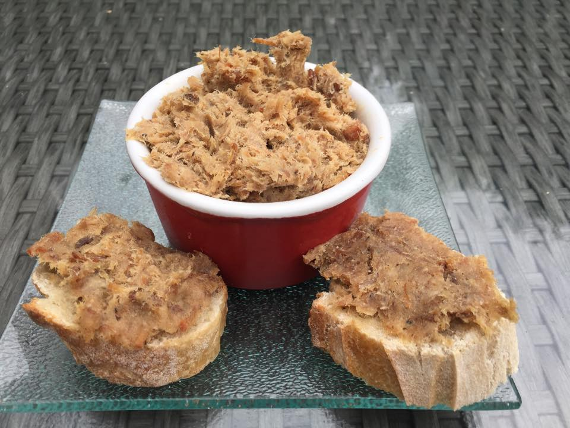

Rillettes maison
Des rillettes de porc fondantes à tartiner sur du pain.
Ingrédients :
- 1kg d’échine de porc
- 200g de lard
- 2 gousses d’ail
- Thym, laurier
- Sel, poivre
Préparation :
- Coupe la viande en morceaux et place‑la dans une cocotte avec le lard, l’ail et les herbes.
- Couvre et laisse mijoter à feu doux pendant 4 heures jusqu’à ce que la viande se défasse.
- Effiloche la viande à la fourchette, assaisonne et place en pots.
← Retour à l'accueil